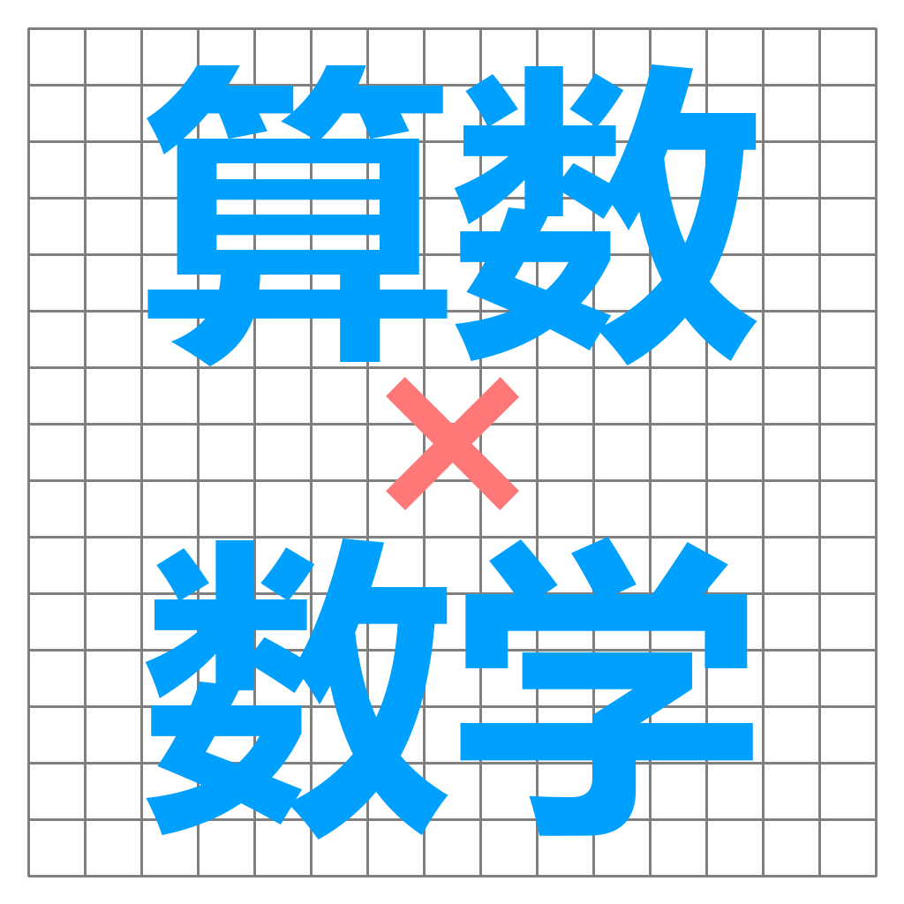
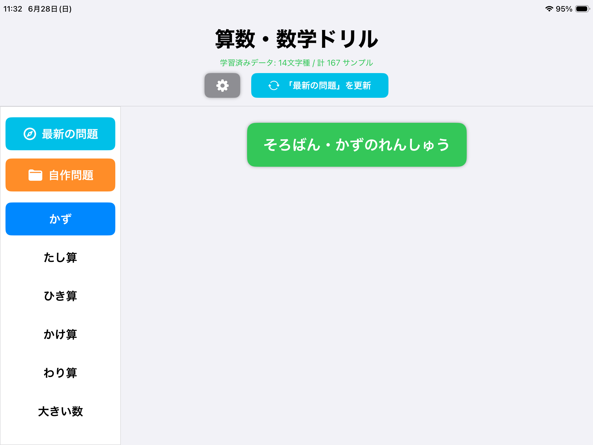
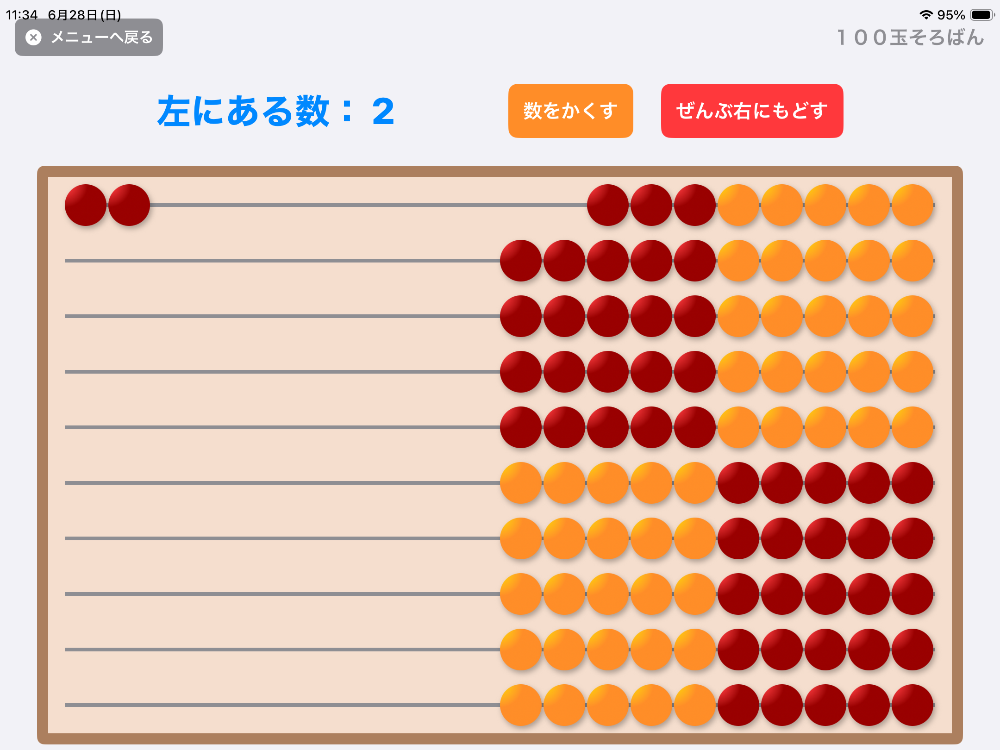
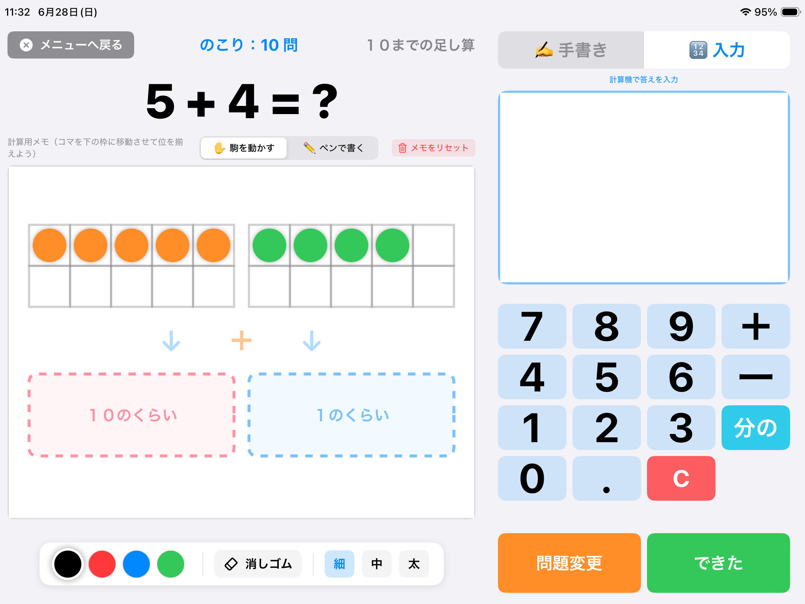
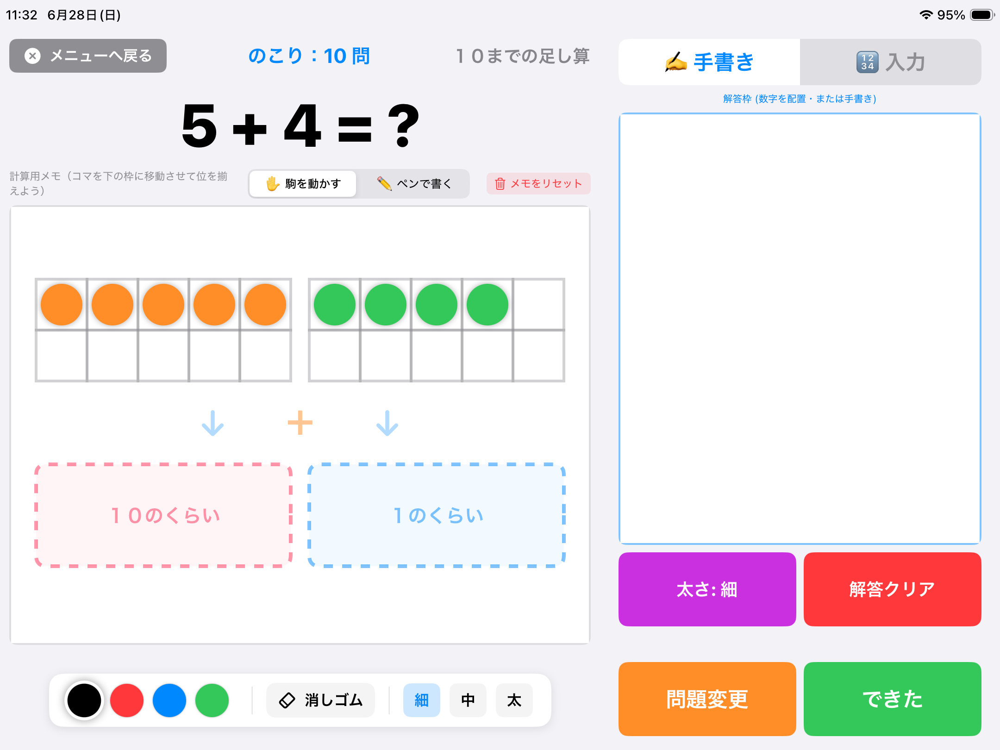
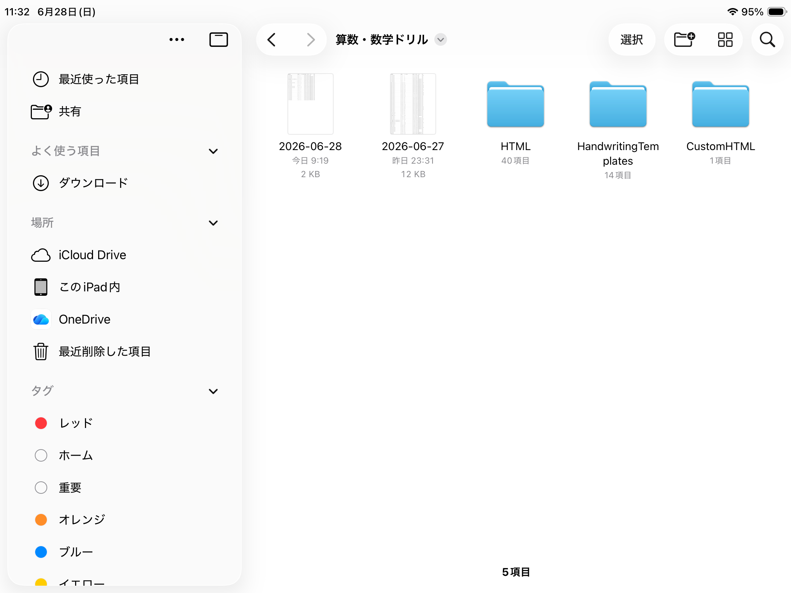

とぅしぃ！のホームページ
iPad対応アプリ
「算数・数学ドリル」
JavaScript対応版


起動時のメニュー画面です。

100玉そろばんアプリです。

電卓式入力もーどです。
画面左側は、メモや計算過程で、右側が解答欄になります。
解答後右下の「できた」ボタンで正解かどうか判断できます。
正解後は、「次の問題へ」ボタンに代わるので押して次の問題へ切り替えます。

手書き入力モード。

ファイルアプリで開いた画面です。
①「HTMLフォルダ」はオリジナルの最新版問題が取り込まれる場所です。
②「CustomHTMLフォルダ」に、「index.html」をメニュー画面として、
その他の「html」ファイルや画像ファイルなどを保存することで、
独自問題を実行することができます。
③日付の名前のcsvファイルには、学習結果が記録されています。
活用ください。
・・・以上